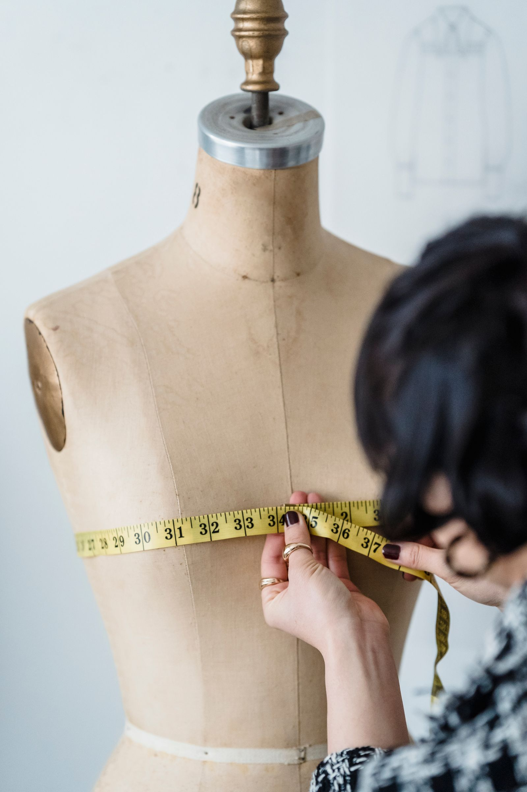
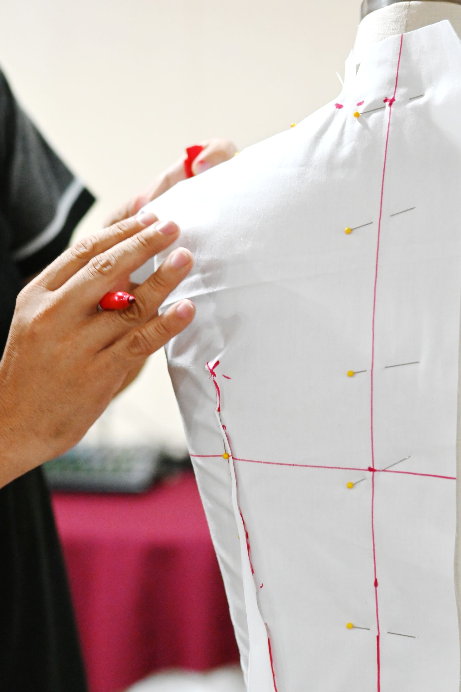

Fit that feels tailor-made,
because it is.
Silver Thimble Alterations has been fitting Bryan for 24 years — wedding dresses, suits, everyday hems, and everything in between. Owner Ocie Williams and Rodrigo do the work themselves.
910 N Earl Rudder Fwy STE.250, Bryan, TX 77802 · Colony Park

Illustrative stock photo (not Silver Thimble's own shop) — photo by Michael Burrows / Pexels.
From wedding gowns to everyday hems
Real reviews describe wedding dress fittings, bridesmaid dresses, zipper replacements, and suit alterations with quick turnaround. Exact services below are general examples for this trade — confirm your specific piece by phone.
Wedding & bridal fittings
The most-mentioned service in real customer reviews — wedding dresses and bridesmaid dresses fitted for the big day.
Suit & formalwear alterations
Suits taken in, hemmed, and fitted for events.
Zipper repair & replacement
Zipper replacement on everyday and specialty garments.
Hemming & general alterations
Pants, dresses, and everyday clothing hemmed and taken in.
Garment resizing
Taking pieces in or letting them out for a better fit — confirm by phone.
Rush & quick-turnaround work
Reviewers repeatedly praise fast turnaround — ask about rush timing when you call.
Services above are general examples for a tailoring & alterations shop, informed by real customer reviews — call (979) 775-5600 to confirm exactly what your garment needs.
24 years of Bryan's brides, hemlines & hand-me-downs

Silver Thimble Alterations has operated in Bryan's Colony Park for 24 years under owner Ocie Williams, with staff member Rodrigo doing alteration work alongside her. Reviewers name Rodrigo directly and praise his precision on everything from a snug top to a full bridesmaid dress fitting.
The single most-repeated theme across 124 reviews is bridal work — wedding dresses and bridesmaid dresses altered to fit perfectly, often on a tight timeline before the wedding, alongside everyday hemming and zipper repairs for the rest of Bryan.
Sourced from Silver Thimble Alterations' public Google Business Profile, verified 2026-09-21.
910 N Earl Rudder Fwy, Suite 250
Hours
Monday–Thursday: 9 AM–6 PM
Friday–Sunday hours aren't confirmed — call (979) 775-5600 before you visit. Mon–Thu hours verified on the Google listing, 2026-09-21.
Contact & directions
910 N Earl Rudder Fwy STE.250, Bryan, TX 77802 (Colony Park)
No real independent website found — a "website" link shown on the unclaimed Google listing routes to an unrelated ad-redirect domain, not a real Silver Thimble site.
124 reviews and counting
Silver Thimble Alterations holds a 4.5-star rating on Google from 124 reviews — one of the strongest review counts of any business in this program. Wedding and bridesmaid dress work is the single most-repeated theme, alongside quick turnaround and fair prices.
Individual Google review text will appear here once the site is connected live — this demo doesn't publish scraped review quotes.
Rating verified on Silver Thimble's public Google Business Profile, 2026-09-21.
Bring us the piece — we'll make it fit
Wedding dress, suit, or a favorite pair of pants that's just a little off — call Silver Thimble Alterations.
910 N Earl Rudder Fwy STE.250, Bryan, TX 77802 · Colony Park